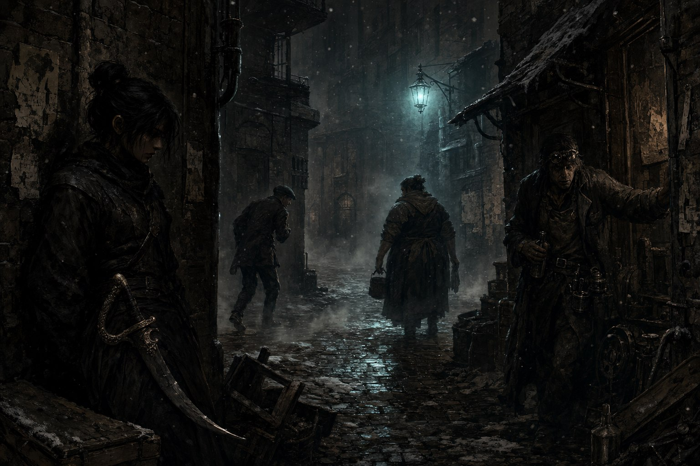
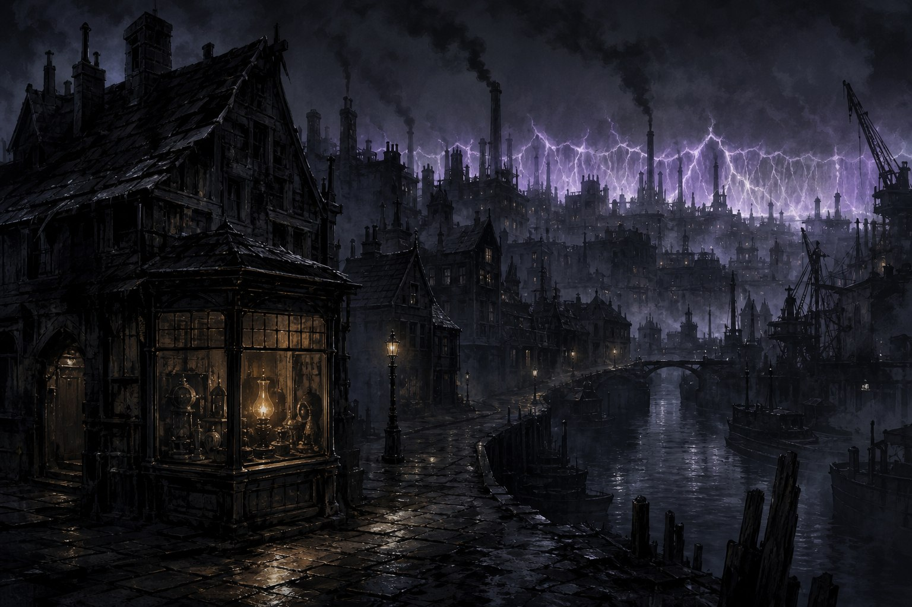
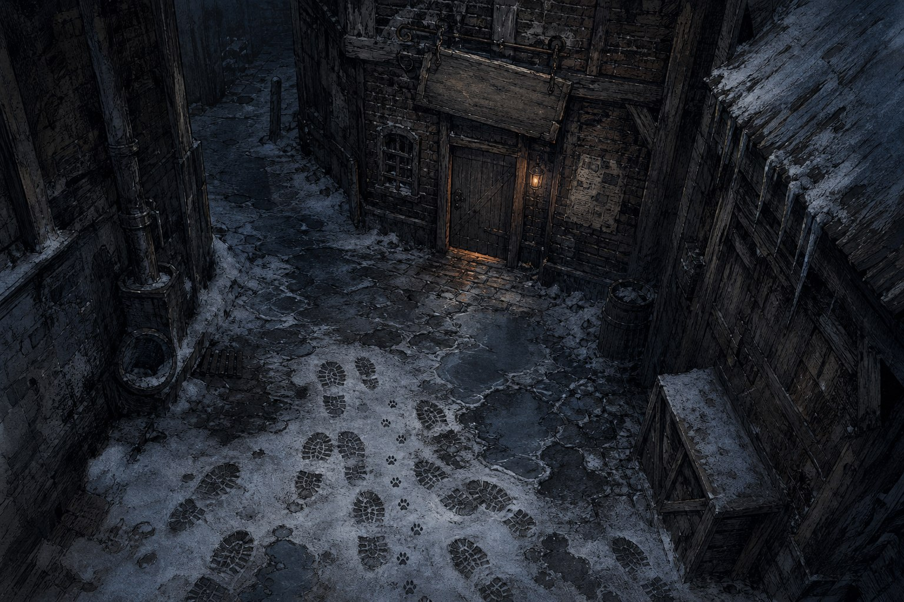

Season Recaps
-

SEASON 1
망나니즈
도스크볼 북쪽, 크로우스풋의 골목에서는 이름이 값이다. 이름이 없는 자는 아무도 두려워하지 않고, 아무도 기억하지 않는다. 847년 겨울, 그 골목의 명부 어디에도 오르지 못한 사람들이 있었다. 칼잡이 하나, 좀도둑 하나, 수리공 하나 — 그리고 뒤늦게 합류한 요리사 하나. 이들을 불러…
-

SEASON 2
세이렌 상사
도스크볼 북쪽 부두에서는 사람이 사라진다. 선원이, 일꾼이, 그리고 아이들이. 바다는 잉크빛이고 비는 그칠 줄을 모르고, 누구도 사라진 이들의 이름을 오래 기억하지 않는다. 크로우스풋 전쟁의 화약 냄새가 가신 지 두 해, 그 부두의 낡은 창고에 인력 소개소 간판 하나가 걸렸다. 세이렌…
-

SEASON 3
황혼의 전달자
도스크볼에는 해가 뜨지 않는다. 번개 방벽 너머는 죽음의 땅이고, 방벽 안쪽에서는 산 자와 죽은 자가 한 도시를 나눠 쓴다. 그 도시의 어느 구석, 먼지 앉은 진열장 안에 가품과 진품이 뒤섞여 잠들어 있는 망해가는 골동품 상점이 하나 있었다. 이 이야기는 그 가게 뒷방에서 시작된다.
-

SEASON 4
언체인드
식스타워즈의 권력은 비어 있었다. 붉은고리회는 자취를 감췄고 스컬록 공의 위세는 무너졌으며, 살아남은 조직들은 숨을 죽인 채 물러앉았다. 그런 빈자리는 오래 비어 있는 법이 없다. 어느 겨울, 사슬을 끊었다는 이름의 신생 건달패 하나가 그 자리를 넘보며 첫발을 뗐다.
-

SEASON 5
로스트 앤 파운드
도스크볼의 겨울, 푸른코트의 어느 구석 부서에 우스운 이름 하나가 붙었다. 로스트 앤 파운드 — 유실물 보관소. 죄를 지은 셋이 벌을 받는 대신 남의 잃어버린 것을 찾아주게 된 곳이었다. 처음 맡은 일은 고양이 찾기였다. 그 고양이가 도시의 운명을 쥐고 있으리라고는, 그때는 아무도 생각…
Other Campaigns
-
R
BAND OF BLADES
Relight
인류 최후의 부대 '군단'이 잿불의 왕의 언데드 군세에 맞서 서쪽으로 패주하는 잿불 속의 군단(Band of Blades) 캠페인 — 에피소드 리캡 아카이브.